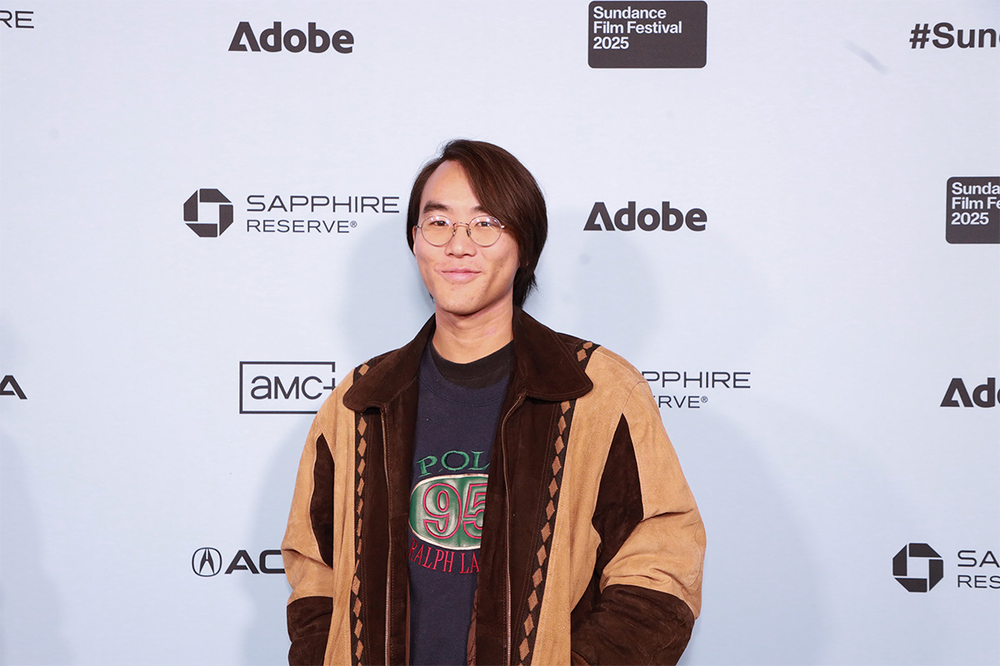
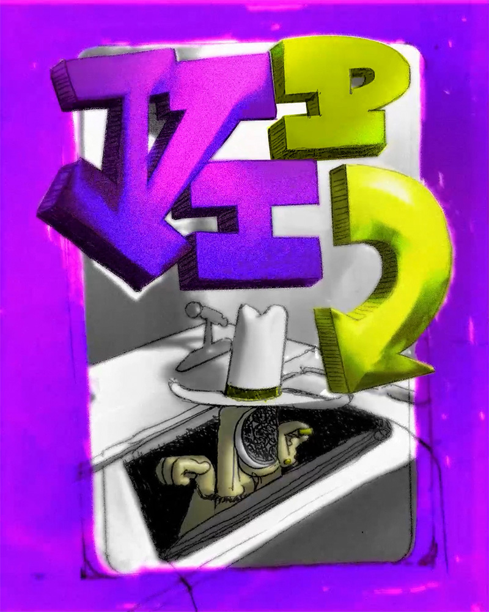

Sobre mí
Diseño Gráfico Diseño AudiovisualDiseñador gráfico y audiovisual con 5 años de práctica. Actualmente cursando la Licenciatura en Diseño en la Universidad Provincial de Córdoba.
Mi trabajo explora el cruce entre la imagen fija y el movimiento, la ilustración y la composición digital. Me interesa el diseño como forma de comunicación que construye sentido visual y emotivo.
Referentes
Una referencia central en mi trabajo es Louie Zong, ilustrador y animador independiente. Su práctica fusiona 3D (Blender) con ilustración 2D para crear imágenes que combinan profundidad técnica y sensibilidad visual particular.
Zong es conocido por sus portadas de álbum, animaciones cortas e ilustraciones que integran síntesis digital con una estética cálida y artesanal.

Louie Zong at the 2025 Sundance Film Festival — WikiPortraits / Wikimedia Commons. Fuente · Licencia CC BY 4.0
Obra propia
Ilustración digital — trabajo personal, 2024.

© 2024 Juani Lujan. Licencia CC BY-NC-ND 4.0